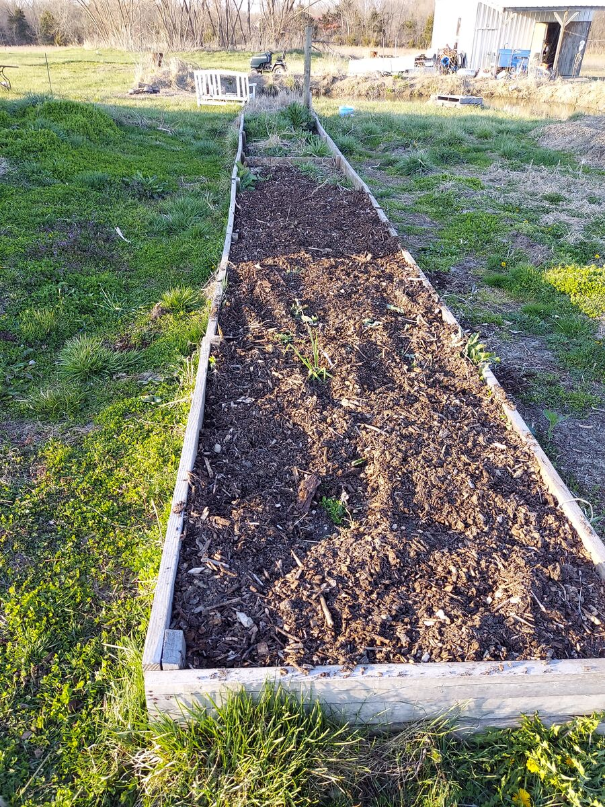
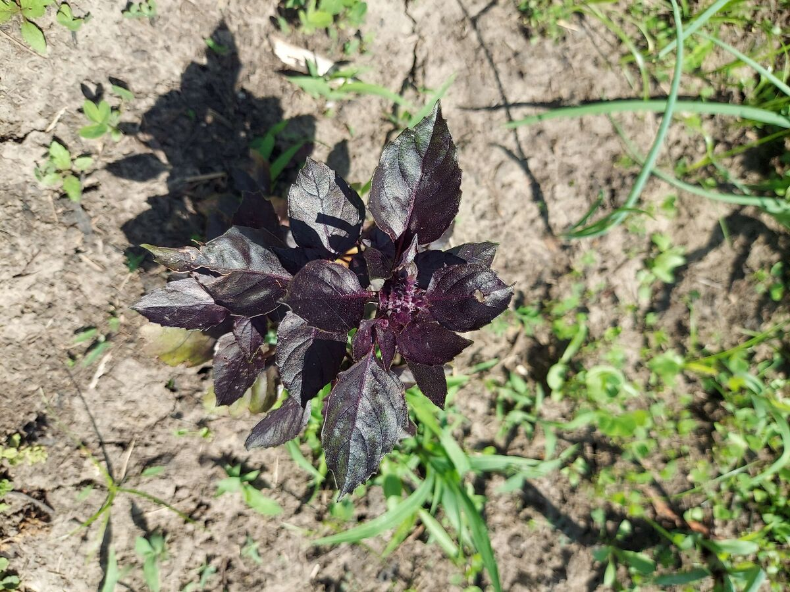
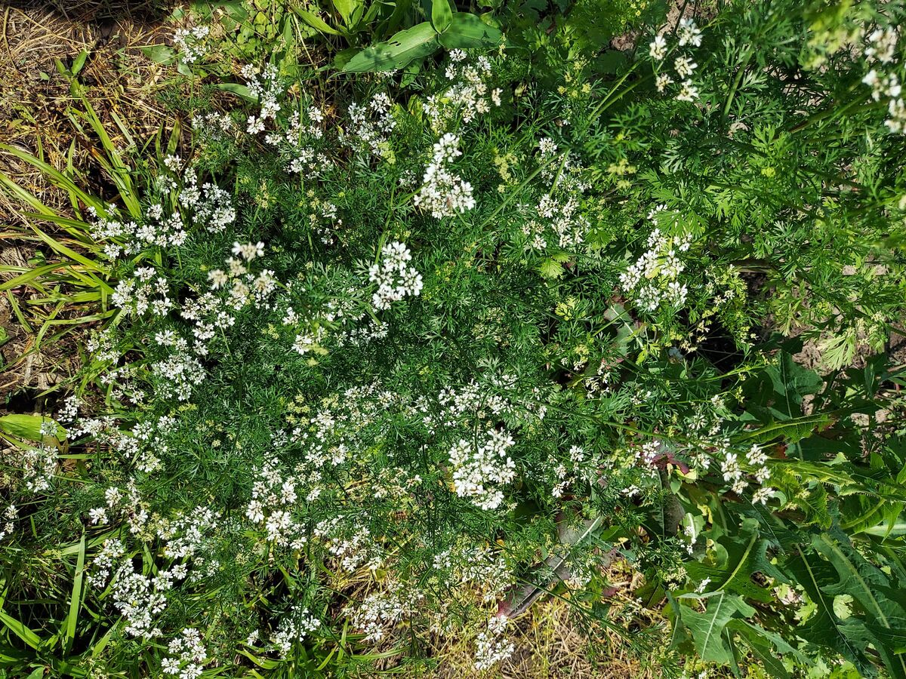

Founder profile
Bobby
Dean
Founder of Ascendism · Missouri
I’m beginning close to home in rural Missouri, while building Ascendism as an invitation for people and families across the United States.
How do we make a more grounded, capable life possible—together—without pretending that land, community, or independence are easy?
Why I’m building this
Make things. Learn from what is real.
My life has been shaped by music production and engineering, graphic design, writing, programming, gardening, and practical experiments in self-reliance. I want to connect those threads to something more durable than a private project.
Ascendism is a place where people can learn what they have to offer, find others who are compatible in the ways that matter, and take real steps before making giant commitments.
What I’m looking for
Work close to the ground
A life has to be tended.
Growing and learning from the land keeps this work concrete. It is about patience, stewardship, useful work, and building one responsibility at a time.





The member profile model
Human profiles, not public dossiers.
When the member service is online, verified Discord members will be able to make a limited profile: one rounded profile image, up to five additional images, a public-safe region, what they know, what they can contribute, what they are looking for, and what they prefer to keep private. No exact addresses, no forced public sharing, and no algorithmic promise that strangers are a “perfect match.”